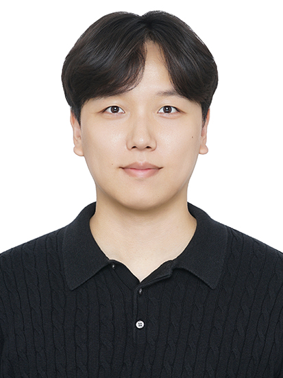
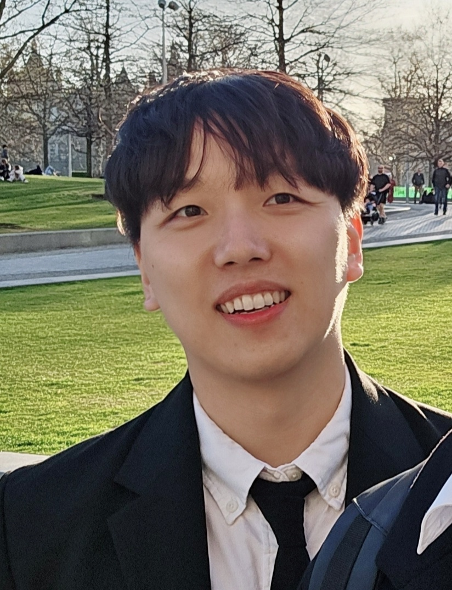

People


Ju-Chan Park, Ph.D.
Principal Investigator
Synthetic & Programmable Advanced Cell Engineering Lab, GSMSE, KAIST
Ju-Chan Park leads SPACE Lab's work on context-aware genome editing, generative AI for cell engineering, and hPSC-based disease modeling & drug screening. He completed his Ph.D. at the Seoul National University College of Pharmacy (Prof. Hyuk-Jin Cha), followed by postdoctoral research at the SNU Medical Research Center (Prof. Sangsu Bae) and Harvard Medical School (Prof. Vikram Khurana), before joining KAIST GSMSE as Assistant Professor in 2026.
Status
Grants
Awards
2024
KAGE Young Scientist Award — Korean Association for Genome Editing
2023
Chungwoo Award — Seoul National University, College of Pharmacy
Best Learning-lab Project 2023 — Korea Institute of Human Resources Development (KIRD)
2022
Best Oral Presentation, Young Scientist Award — Korean Society for Stem Cell Research (KSSCR)
Best Presentation Award, Young Scientist Program — Korean Society for Biochemistry and Molecular Biology (KSBMB)
Best Research Award — Korean Society for Biochemistry and Molecular Biology (KSBMB)
Young Investigator's Research Award — Korean Society for Molecular and Cellular Biology (KSMCB)
2021
Howol Songam Next Generation Academic Award — Howol Songam Foundation
2020
2020 Bio-Venture Competition, 3rd Prize — Foundation for Medical Innovation
SPACE Lab is recruiting its founding members for 2026. If you're interested in genome engineering, generative AI for cell engineering, or hPSC-based disease modeling, we'd love to hear from you — reach out at jcpark9212@kaist.ac.kr.
M.S.–Ph.D. Course
Recruiting
Undergraduate Intern
Recruiting
No alumni yet
SPACE Lab opened its doors in 2026. Future graduates of the lab will be listed here.